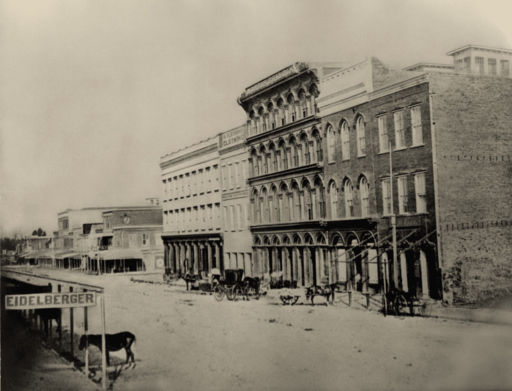
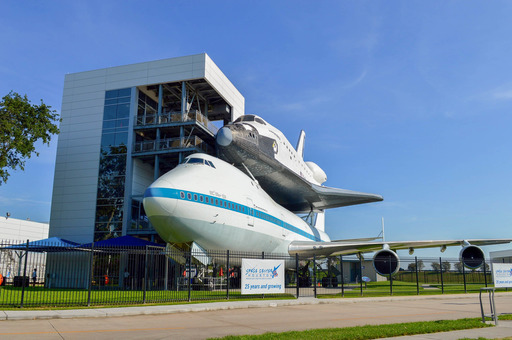
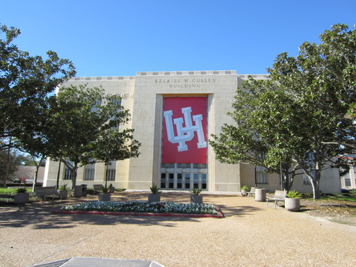
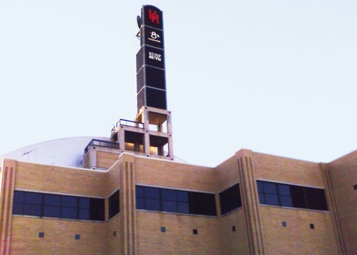
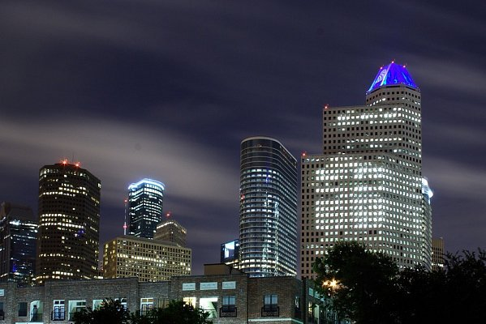

Х'юстон (англ. Houston) — четверте за кількістю жителів місто у Сполучених Штатах Америки та найбільше місто
у штаті Техас з населенням 2 319 603 особи на 2017 рік.
Х'юстон є адміністративним центром округу Харріс, а також головним економічним центром агломерації Великого
Х'юстона із загальним населенням 6772470 осіб на 2016 рік.
Місто розташоване за 50 кілометрів від Мексиканської затоки на прибережній рівнині.
Х'юстон був заснований 30 серпня 1836 і включений до складу республіки Техас 5 червня 1837, отримавши своє
ім'я на честь Семюела Х'юстона - головнокомандувача армією Техасу під час Техаської революції і президента
Республіки Техас.
Швидкий розвиток порту і залізниць в XIX столітті, а також початок видобутку нафти і розвиток нафтової
промисловості в XX столітті призвели до швидкого зростання населення.
У 1960-ті роки кількість жителів перевищила один мільйон людей, а в 2000-х — два мільйони.
Місто є провідним світовим центром енергетичної промисловості, а економіка міста також представлена
підприємствами в галузі аеронавтики, транспорту та охорони здоров'я.
Найважливішими об'єктами для економіки та інфраструктури міста є космічний центр імені Ліндона Джонсона,
найбільший американський з міжнародних вантажоперевезень порт, х'юстонський судноплавний канал, найбільший у
світі Техаський медичний центр.
Місто названо на честь Семюела Х'юстона - головнокомандувача армії Техасу під час Техаської
революції (1835-1836) та президента Республіки Техас (1836-1838, 1841-1844).
Сем Х'юстон народився на околицях Лексінгтона (округ Рокбридж, штат Віргінія), п'ятим із десяти дітей у
сім'ї плантаторів, вихідців з Ольстера шотландського походження.
Батько також Семюел був майором, учасником війни за незалежність. Після смерті батька мати з родиною
переїхала до Мерівілла (штат Теннессі). У 1809 році Семюел втік з дому і якийсь час прожив у племені
індіанців черокі.
У 1812 році повернувся до Мерівілла, де заснував першу школу в Теннессі.
Брав участь у війні з Великобританією 1812-1814 років, потім у війні з індіанцями мускоги, в одній з
битв якої отримав серйозне поранення. Під час війни Х'юстон познайомився із генералом Ендрю Джексоном,
майбутнім президентом США.
Офіційне прізвисько міста Х'юстон — «Space city», яке можна перекласти як «космічний
місто», «місто космонавтики» чи «космоград». Назва дана через те, що тут знаходиться
космічний центр імені Ліндона Джонсона Загалом місто має 12 прізвиськ.
В американській розмовній промові є популярна фраза:«Хьюстон, у нас проблема»(англ.
Houston, we've had a problem), що з'явилася після невдалої місії Аполлон-13. У Х'юстоні
проходили зйомки фільму «Аполлон-13», основою сюжету якого стали реальні події місії.
Заснування
Allen’s Landing - місце, де було засновано місто
Після закінчення війни за незалежність Техасу, у серпні 1836 року підприємці брати Август
і Джон Алени купили 26,9 км² землі вздовж річки Буффало-Байю, плануючи заснувати на ній
населений пункт. Вони хотіли, щоб майбутнє місто стало столицею Техасу та великим торговим
центром.
Датою заснування міста прийнято вважати 30 серпня 1836 року, коли брати Олени розмістили
оголошення про появу міста. Місто назвали на честь генерала Сема Х'юстона, який очолював
армію техасців у битві при Сан-Хасінто під час війни проти Мексики, пізніше обраного
президентом Техасу. На січень 1837 року у селищі проживало лише 12 осіб, проте через чотири
місяця населення зросло до 1500 осіб. 5 червня 1837 року місто було включено до округу Гаррісберг.
(нині Харріс) і став тимчасовою столицею Республіки Техас, якою залишався до 1839 року.
Першим мером Х'юстона став Джеймс Холман.
XX століття

Мейн-Стріт у центрі, 1908 рік
У 1900 році на Х'юстон обрушився Галвестонський ураган, що тривав з 27 серпня по 12
вересня. У перерахунку на сьогоднішній курс збитки склали б $526 млн, загинуло 8 тисяч осіб. У
наступного року було знайдено велике родовище нафти поблизу міста Бомонт, що послужило
початком розвитку нафтової промисловості у Техасі. У 1902 році президент США Теодор Рузвельт
затвердив проект вартістю $1 млн на реконструкцію х'юстонського судноплавного каналу. До 1910
році чисельність населення міста досягла 78 800 осіб, майже вдвічі перевищивши кількість
жителів, що проживали в Х'юстоні в 1900 році.У 1914 році президент США Вудро Вільсон прийняв
участь у відкритті нового глибоководного порту Х'юстона, а через рік було відкрито Х'юстонський
судноплавний канал
У 1945 році було розпочато формування Техаського медичного центру. Наприкінці 1940-х кілька
передмістя були включені в межу, в результаті чого площа Х'юстона збільшилася
більш ніж удвічі. У 1950-ті роки управління багатьох великих (переважно нафтових) компаній
США перемістилися в Х'юстон, що сприятливо позначилося на економіці міста, одним із
приводів для переїзду стало масове оснащення всіх офісів кондиціонерами.
Саме кондиціювання повітря! Саме воно було основою для стрімкого
зростання Х'юстона в 1950 році, коли він став найбільш оснащеним кондиціонерами
містом у світі. Саме це стимулювало багато корпорацій перемістити свої штаб-
квартири в Х'юстон.
У 1962—1964 роках за двадцять п'ять миль на південь від центру Х'юстона, на землях, переданих
федеральному уряду університетом Райса, був побудований Центр управління космічними
кораблями, що з 1973 року носить ім'я Ліндона Джонсона. У 1960-х роках населення Х'юстона
досягло мільйона людей.
Фізико-географічна характеристика
Географічне положення та клімат
Х'юстон із супутника Landsat 7
Х'юстон розташований за 50 кілометрів від Мексиканської затоки на прибережній рівнині.
Значна частина міста була побудована на лісових угіддях, болотах та преріях, вони досі порохозбереглися
в прилеглих районах біля Х'юстона. Місто розташоване на території, для якої
звичайні часті зливи та дощі, тому для Х'юстона повені - постійна проблема. Висота
міста над рівнем моря в середньому 15 метрів, найвища точка – північний захід Х'юстона (38
метрів). Площа міста складає 1552,9 км².
Навесні та влітку у місті спекотно та волого: середня температура навесні 21 °C, а влітку – 28,8 °C.
Через
високої температури майже у всіх транспортних засобах та будинках встановлені кондиціонери.
Абсолютний максимум температури був зареєстрований у 2000 та 2011 роках, коли вона склала
42,8 °C. На Х'юстон часто обрушуються урагани, найбільші з яких останні
десятиліття - "Еллісон" і "Айк". Осінь - досить тепла пора року, особливо вересень.
Температура цього місяця вища, ніж у травні. Середня температура восени становить 21,8 ° C, а
середня кількість опадів – найвища у році (359,7 мм). Зима тепла. Найнижча
температура була зареєстрована 1930 року - −15 °C. Середня температура взимку складає
12,6 °C, а максимальна була зареєстрована в 1986 - 32,8 °C. 18 днів на рік температура
опускається нижче 0 °C. Зазвичай узимку опади випадають у вигляді дощу, але рідко можуть бути і у
вигляді
снігу. Починаючи з 1895 року сніг падав 35 разів, причому 21 раз встановлювався тимчасовий сніговий.
покрив.
Місяць
Січ
Лют
Бер
Квіт
Трав
Черв
Лип
Серп
Вер
Жовт
Лист
Груд
Рік
Сонячне сяйво, день
10
10
9
8
8
8
10
9
7
7
8
8
106
Дощ, день
14
12
12
10
10
14
13
12
10
9
10
12
136
Рельєф, внутрішні води
Для ґрунтів Х'юстона характерна наявність осадових гірських порід та піску. На поверхні часті
ерозії, біля міста перебуває близько 300 розломів, їх загальна довжина приблизно 500 км. Один
з них - Long Point-Eureka Heights fault system. Також є унікальні відкладення із суміші пісків та
глин, завдяки ним, через певний час, з органічних речовин, що розкладаються, утворюються
нафту та природний газ. На околицях Х'юстона зустрічається чорний родючий ґрунт, на якому
вирощують рис, сою, зернові культури, овочі і розводять велику рогату худобу, коней, свиней і
домашню птицю.У місті та його околицях є дуже мала ймовірність сильного
землетрусу, а найсильніший землетрус магнітудою 3,8 був у 1910 року.
У Х'юстоні протікають чотири річки. Основна, Буффало-Байю, проходить через центр міста та
Х'юстонський судноплавний канал, і має три притоки. Брес-Байю протікає вздовж Техаського району.
медичного центру, Сімс-Байю проходить через південну частину міста, Уайт-Ок-Байю - через
північну частину міста.Судноплавний канал слідує далі до Галвестону, аж до Мексиканського.
затоки. У передмісті знаходяться два озера: Конро та Х'юстон, які є водосховищем та
служать міськими джерелами води. На території міста протікає безліч підземних вод,
які раніше активно використовували для водопостачання, але перестали через повільний рух
земної поверхні.
Флора і фауна
Парк Discovery green у центрі Х'юстона
У флорі та фауні округу Харріс переважають види тварин і рослин, що мешкають у болотних
місцевостях, оскільки значна частина міста побудована на болотах та преріях.
Серед земноводних та плазунів найбільш відомі х'юстонська жаба та техаська рогата
ящірка. Серед ссавців можна відзначити рудого вовка, оцелота та канадську видру. Серед
птахів помічаються американський клювач та білоголовий орлан.Чисельність більшості тварин за
останнє століття значно скоротилося в межах округу і знаходиться під загрозою зникнення через
їх винищення та погіршення екологічної обстановки. У місті також водяться комарі,
які становлять небезпеку людині.
У місті та його передмістях ростуть сосни, пальми та інші дерева, що ростуть у субтропічному.
кліматі. Серед рослин, що ростуть у місті, можна виділити орхідеї та магнолії.
Економіка
Найбільші компанії, що базуються у Х'юстоні за
версією Fortune 500 на 2016 рік.
Техас
Компанія
США
3
Phillips 66
30
5
Sysco
57
8
ConocoPhillips
90
12
Halliburton
117
16
Hewlett Packard Enterprise
123
18
Baker Hughes
178
20
National Oilwell Varco
192
21
Kinder Morgan
198
24
Waste Management
221
25
Occidental Petroleum
255
29
Group 1 Automotive
267
34
Cameron International
319
35
EOG Resources
322
38
Quanta Services
353
39
CenterPoint Energy
363
52
Spectra Energy
493
48
KBR
460
Компанії енергетичної промисловості
ІТ, інженерні та телекомунікаційні компанії
Компанії інших галузей
Х'юстон є одним з провідних міст світу у сферах видобутку та переробки нафти та
природного газу, через що часто називається «енергетичною столицею світу», а також
біомедичних досліджень та аеронавтики. Також Х'юстон має репутацію «зеленого міста»,
так як половина електроенергії виробляється за допомогою сонячних та вітряних установок.
Велику роль транспортній сфері міста грає порт. У Х'юстоні базується 22 компанії з
список Fortune 500.
Міжнародна дослідна компанія Mercer у 2017 році відвела Х'юстону 67 місце у
рейтинг найзручніших для проживання міст світу — між британським Белфастом та
американським Майамі, і 75 місце серед міст світу за вартістю життя - нарівні з Бангкоком,
Дохою та Мюнхеном. Місто сильно знизило позиції через економічну ситуацію і на 2016 рік
займає лише 63 місце у США в категорії «найкращі місця для бізнесу та кар'єри» за версією
журналу Forbes. Дослідницька компанія A.T. Kearney поставила Х'юстон на 38 місце у списку
світових міст світу. У дослідженнях університету Лафборо про глобальні міста Х'юстона
поставлено категорію «Бета+», як і Дюссельдорфу, Монреалю, Тель-Авіву.
Мінімальна заробітна плата в Х'юстоні за годину становить $7,25 або $1 257 на місяць. Безробіття на
початок 2017 року становив 5,8 %. За межею бідності перебувають 9,2% мешканців. Середні доходи
сім'ї на 2016 рік за даними Forbes становлять $60 840, а середня ціна будинку становить $219 000.
За підсумками 2021 року експорт Великого Х'юстона становив $176,8 млрд, а імпорт - $96,1 млрд.
Основними статтями експорту були: нафтопродукти - $111 млрд (56,4%), хімікати - $17,3 млрд (9,6%),
пластик та продукти із пластику — $9,9 млрд (7,1 %), промислове та комп'ютерне обладнання — $8,7 млрд
(6,4 %),
транспортні засоби та запасні частини до них - $4,3 млрд (2,8%).
Значними статтями імпорту стали: нафтопродукти - $21,4 млрд (22,3%), промислове та комп'ютерне
обладнання - $13 млрд (13,5%),
електрообладнання — $6,7 млрд (7 %), вироби із заліза та сталі — $5,9 млрд (6,1 %), транспортні засоби
та запасні частини до них — $5,6 млрд (5,8 %).
До 1980-х років у місті була розвинена переважно нафтова промисловість, що становила 87 % усієї економіки
міста, що призвело до серйозної залежності від нафтових цін.
У 1980-х років в економіці міста була рецесія внаслідок нафтової кризи того десятиліття, що призвело до
втрати 220 тисяч робочих місць.
З кінця 1980-х років Х'юстон диверсифікує свою економіку, зосередивши увагу на розвитку аерокосмічної
промисловості,
охорони здоров'я, інформаційних технологій, а яскравим прикладом можуть бути такі великі організації, як
Техаський медичний центр та міський порт.
Частка нафтової індустрії в економіці знизилася вдвічі — з 87 до 44% до 2016 року.
Станом на середину 2022 року економіка Х'юстона активно відновлюється після пандемії COVID-19 і перебуває у
процесі виходу до допандемійного періоду,
а головним викликом стала висока інфляція внаслідок переривання глобальних ланцюжків поставок через
пандемію, що триває з лютого 2022 року, війни в Україні.
Енергетика та нафтохімія
Офіс компанії Chevron у Х'юстоні
У Х'юстоні знаходиться понад 5 тисяч енергетичних компаній, пов'язаних із веденням бізнесу в цьому
регіоні. У місті знаходяться штаб-квартири безлічі енергетичних та нафтових компаній,
входять до списку Fortune 500. Х'юстон є членом Світового партнерства енергетичних
міст.
Однією з найбільших компаній, що забезпечують електроенергією місто, є компанія
CenterPoint Energy, яка постачає електрику не тільки для Техасу, але й для Арканзасу,
Луїзіани, Міннесоти, Міссісіпі, Оклахоми. Послугами компанії користується понад 5 млн осіб.
Інша велика енергетична компанія Calpine займає 42 місце в Техасі та 402 у США в рейтингу
Fortune 500. Корпорація має парк з 84 електростанцій різних типів, розкиданих по всій
території США. Одна з них, Channel Energy Center, розташована у самому Х'юстоні, на березі
судноплавного каналу, ще одна, Baytown Energy Center - у передмісті Бейтаун. Максимальна
потужність х'юстонської електростанції - 808 мегават (базова - 723 МВт), бейтаунська
електростанція в піковому режимі здатна виробляти 842 мегават (базова електрична
потужність - 782 МВт). На території метрополії Великого Х'юстона діє вісім
електростанцій Calpine.
Х'юстон є одним з найбільших виробничих центрів світу для нафтохімічної
промисловості. У місті розташовано понад 3 700 організацій, що працюють у сфері
нафтохімії. Також у регіоні Х'юстон знаходяться 9 нафтопереробних заводів,
переробних 2,3 мільйона барелів щодня, що становить 13,2 % від усієї переробки США.
Також у Х'юстоні є 719 підприємств зі створення хімічних та пластмасових виробів. У
місті знаходиться 17,5% робочих місць, зайнятих у сфері нефетехімії, з усіх місць у США (112,6%)
тисячі із 643,3 тисяч. Місто займає лідируюче місце з виробництва товарів із поліетилену.
(38,7% від усього виробництва у США), полівінілхлориду (35,9%) та поліпропілену (48,4%).
Авіакосмічна промисловість

Космічний центр ім. Джонсона
У Х'юстоні розташовується космічний центр імені Ліндона Джонсона, що є
науково-дослідне та проектно-конструкторське підприємство, в якому працюють 15000
людина (3000 інженерів та вчених, 12000 інших робочих). Усього в місті розташовуються більше
150 організацій, які мають справу із космічною галуззю.
У районі Х'юстона знаходяться виробничі потужності компанії Lockheed Martin, а також офіс
програми будівництва космічного корабля "Оріон" для NASA У місті розташовані
виробничі потужності компанії Boeing, а також штаб-квартира підрозділу Boeing Space
Exploration», що займається дослідженням космічних систем. Потужності компанії Beechcraft,
що знаходяться в аеропорту ім. Хобі, займаються технічним обслуговуванням та ремонтом повітряних
судів. Компанія Barrios Technology виконує контракти для NASA, пов'язані з кораблем «Оріон»,
а також розробляє програмне забезпечення для повітряних суден Boeing. Іншими великими
виконавцями замовлень NASA у Х'юстоні є: Computer Sciences Corporation - технічне
обслуговування та модифікація літаків, Jacobs Engineering Group — машинознавство, L-3
Communications — роботехніка, MEI Technologies — електричні інженерні системи,
Oceaneering International — скафандри та апаратне забезпечення, що додається, Raytheon —
лабораторія нейтральної плавучості та макети космічних коробок, SAIC — безпека та
підтримка місій, United Space Alliance — координаційний центр інформації, United
Technologies – позакорабельна діяльність, Wyle Laboratories – космічна біологія.
Соціальна сфера
Охорона здоров'я
Техаський медичний центр
Важливу роль у охороні здоров'я Х'юстона грає заснований в 1945 році Техаський медичний центр, що є
комплексом з 63 установ і є найбільшим у світі.
медичним центром за кількістю лікарень, лікарів, площі та пацієнтів.
У Техаському медичному центрі працюють понад 106 тисяч співробітників, а сам центр обслуговує понад 10
мільйонів відвідувань на рік.
Найбільш значущими у центрі лікарнями є найбільші у світі у своєму профілі Онкологічний центр М. Д.
Андерсона та Техаська дитяча лікарня.
Станом на 2020 рік у системі охорони здоров'я Х'юстон працювало 19 493 лікарів і понад 376 тисяч
співробітників загалом, а сама система включала 21 391 установу,
включаючи 13 899 центрів позалікарняної допомоги, 6 512 закладів соціальної допомоги, 740 інтернатів або
закладів для людей похилого віку та 240 лікарень[154].
У період з 2016 по 2020 роки в окрузі Харріс сталося 138 924 смертей, 71,6 % з яких припало на десять
найпоширеніших причин: серцево-судинні захворювання (21,75 %),
онкологія (20,12 %), нещасні випадки (6,42 %), цереброваскулярні хвороби (5,4 %), хвороба Альцгеймера (3,7
%), хронічна обструктивна хвороба легень (3,58 %), цукровий діабет (3 ,03%), сепсис (2,61%),
COVID-19 (2,61%) та захворювання нирок (2,38%). Очікувана тривалість життя в окрузі Харріс у 2021 році
склала 79,9 років.
Освіта

Х'юстонський університет
У Х'юстоні та в межах 160 км від міста знаходиться 31 заклад академічного навчання, з яких 22 – вищі
навчальні заклади, а 9 – громадські коледжі.
У місті в 2021 році навчалося 424,5 тисячі студентів, з яких 232 тисячі — студенти вищих закладів, а 192,5
тисячі — навчаються коледжів.
У місті розташовано три дослідницькі університети першого рівня (Tier I), які мають найвищий рейтинг за
системою класифікації Карнегі для дослідницької діяльності:
університет Райса, Х'юстонський університет та Техаський університет A&M.
Також у місті існує державна Система Х'юстонського університету, в яку об'єднані чотири університети:
Х'юстонський університет, університет Х'юстон — Клір-Лейк,
університет Х'юстон-Даунтаун та Х'юстонський університет у Вікторії.
Трьома найбільшими університетами за кількістю надійшли у 2021 році склали (у тисячах): Техаський
університет A&M (66,5), Х'юстонський університет (46,9) та Державний університет Сема Х'юстона.
Станом на 2020 рік 34,31% жителів Х'юстона старше 25 років мають вищу освіту, з них 20,69% - бакалаври та
13,62% - магістри. 23,34% громадян закінчили коледж без диплома або мають ступінь
асоціату після закінчення дворічного навчання в освітньому закладі, 22,09% закінчили школу, а 20,26% - не
закінчили школу.
Засоби масової інформації

Мовний центр,
місцезнаходження KUHT та KUHF
У на початку 1950-х років було прийнято рішення зарезервувати низку частот мовлення для освітнього
громадського ТБ.
Першу некомерційну освітню телестанцію було створено у Х'юстоні в 1953 р.
У Х'юстоні ведуть мовлення 19 телеканалів. Найбільш відомі телеканали є афілійованими
каналами великих телекомпаній: KPRC-TV (NBC), KHOU-TV (CBS), KTRK-TV (ABC), KRIV (Fox),
KIAH (The CW) та KTXH (MyNetworkTV). Телеканал KUHT є членом національної
громадської телемовної служби PBS.
У Х'юстоні ведуть мовлення 29 радіостанцій. Одна з найбільших радіостанцій, KUHF, належить
Х'юстонської університетської системи.
Houston Chronicle – найбільша щоденна газета Х'юстона та штату Техас, яка належить
Нью-Йоркської корпорації Hearst Corporation. У 2014 році щоденний тираж газети складав 356
347 екземплярів, що ставить її на 16 місце за тиражем серед усіх газет США. До 1995 року
існувала Houston Post, але була поглинена Houston Chronicle. На сьогоднішній день
єдиним основним альтернативним міським виданням залишається тижневик Houston Press,
його щотижневий тираж 2016 року становив 43 810 екземплярів. У Х'юстоні випускається газета
Houston Business Journal, яка є частиною компанії American City Business Journals.
Зовнішні зв'язки
У мерії Х'юстона є відділ міжнародної торгівлі та розвитку, що займається взаємодією адміністрації міста з
міжнародним бізнес-спільнотою.
У 2018 році Х'юстон відвідало 165 іноземних делегацій із 40 країн. У Х'юстоні розташовані консульства 82
країн.
За кількістю консульств місто посідає у США третє місце після Нью-Йорка та Лос-Анджелеса.
Понад 430 х'юстонських компаній мають офіси за кордоном, а також у місті розташовані офіси 800 зарубіжних
компаній.
З 9 по 11 липня 1990 року у місті відбувся 16-й саміт G7.
Щорічно у Х'юстоні проводяться міжнародні конференції, такі як Offshore Technology Conference та CERAWeek,
де обговорюються питання енергетики.

Х'юстон зараз
Згідно з міським сайтом, у Х'юстона 18 міст-побратимів (востаннє цей список
розширювався у 2015 році, коли до нього приєдналася Басра):